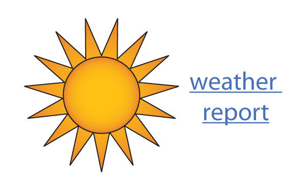
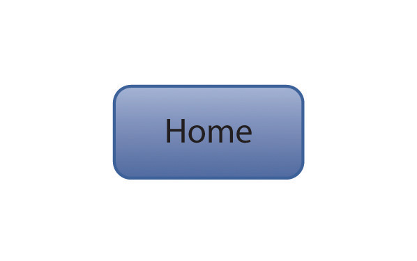

The digital world has permanently altered written communication. Copying and pasting ease the sharing and transferring of large blocks of text. Independent and joint editing of text is much easier and much less time consuming. Searching for specific parts of a long text is quick and easy. Checking for plagiarism takes only a few seconds. Multimodal compositionsAn emerging type of composition that incorporates a variety of modes of delivery (e.g., audio or visual content) into written material. can be created by incorporating visual and auditory material into written texts. The following sections provide a general overview of composing in web-based environments, creating websites, collaborating online, creating e-portfolios, and using web links.
Both as a student and in other aspects of your life, you are likely to write information and publish it on the Internet. Some examples of possible Internet writing that many people take part in are chat rooms, social networking sites like Facebook, voice over Internet protocol (VOIP) platforms like Skype, e-mail, mobile cellular texts, online distance-learning coursework (such as assignments, group projects, and discussion forums), blogs and responses to blogs, instant messages, wikis, nonacademic discussion forums, web-based memorial sites, responses to online newspaper articles, and job applications. Given that few of these media or genres existed a generation ago, it’s patently absurd to argue that “people don’t write (or read) anymore,” and it’s difficult to argue that writing teachers shouldn’t try to account for what’s at stake when you write on and for the web.
Like every other kind of written communication, how you write on the web depends on the purpose of the specific situation. In reality, you’ve probably developed a pretty good system for running your web-based communication through an almost unconscious version of the statement of purpose questions from Chapter 5 "Planning". If you have an unlimited text plan and maintain at least one profile on a social networking site, you concern yourself with matters of voice, message, audience, tone, attitude, and reception hundreds of times a day. At the very least, students and teachers ought to be trying to learn together how to apply or translate the sophisticated rhetorical strategies you use in your casual communication to your more serious academic and professional endeavors.
Because you are often multitasking while texting or using the web and because of the speed and convenience of electronic communication, this realm is prone to carelessness. In casual situations, rules are minimal and you can use very casual language that includes abbreviations, slang, and shortcuts. Your use of a casual tone depends solely on whether your audience will understand what you are saying. Writing for school or work does not fall into the casual category. In these situations, you cannot use abbreviations, slang, and shortcuts. In fact, you need to use proper punctuation, grammar, and capitalization. You should also use traditional writing rules and a more formal tone when responding to diverse populations and serious situations.
Whether writing in a casual or formal situation, always be aware of the population that has access to your content. Also keep in mind that even if you are writing on a semiprivate venue like a class-wide course management system or on an invitation-only wiki, your digital text can easily be copied by someone with access and forwarded to someone without access. So don’t write anything that could embarrass or cause problems for you or others.
Due to the nonprivate nature of the Internet, you should not provide full contact information. Depending on the situation, you might choose to use your full name (such as in an online class or on a memorial condolence site) or you might choose to use a pseudonym (such as in a response to a blog or to an online newspaper article). Only give your phone number and address when you are on very secure sites. Never post your social security number online. If you have a legitimate request for your social security number, call and give it over the telephone.
Identify each of the following as a forum that could be considered casual or formal and thus worthy of a casual or formal tone:
Rewrite the following ideas in your words in two different ways: one that would work for a casual online post and one that would work for a formal online post.
You may have occasion to create websites for professional, personal, or academic reasons. Whether you create a site to supplement a résumé, to serve as a common, virtual family meeting place, or to showcase individual or collaborative work you’ve done for a class, you should follow some basic guidelines to make sure your website is aesthetically pleasing and well organized, so that it functions well and accomplishes its purpose.
Use relevant photos, graphics, and font variations to give your site interest. Leave plenty of white space. A crowded web page is not inviting. Use an easily readable font and font size with ample leading. Small tight text is hard to read and many Internet searchers will skip such a site and move on to the abundance of other choices. Take care when choosing background and font colors. Make sure your background does not engulf the text making it hard to read. As a rule, make your background light and your text dark. Take care when choosing background effects. A very busy background can detract from your content.
Plan for little or no scrolling. Instead include clearly marked navigation links to move to different parts of the information. Include navigation links to all parts of the website from all pages so a person never feels stuck on a page. Design an overall look that holds from page to page to give your website consistency. Use an easily recognizable format for navigation links so that they clearly stand out.
Use images that are between forty and one hundred kilobytes to ensure clear images that are easily and quickly loaded on most people’s computers. Since one hundred kilobytes is the maximum suggested size, you will have your best luck if you stay well below that level. Match your level of use of technology tools to your needs. Don’t add features just to try to make your site impressive. Remember that the more features you add, the more likely it is that someone will have trouble with your site. Some people’s computers will have trouble with very involved opening pages that include audio and video. If you choose such an opening page, also include an override button for people who can’t or don’t want to view the opening page. Make sure all the links and paths are very obvious and that they all work smoothly.
Make sure the home page is uncluttered and clearly states the purpose of the website. This is the main chance you have of attracting attention. Make the website as visual as possible. The more quickly a person can glance through web content, the more likely the person is to take in the information. You can make a site visual by including subheadings that stand out, relevant images, short blocks of text, white space between blocks of text, and numbered or bulleted lists. Keep the website up to date. Depending on the content and purpose of the website, keeping it up to date could be a daily, weekly, or monthly chore. Consider that a site that is out of date ceases to be visited. Include a contact link so viewers can reach you. Remember that anyone with Internet can access your site. Take care with the information you post. Always assume that your instructors, employers, parents, or friends will see it.
Both education and business regularly take advantage of online collaboration. In education, students are often asked to collaborate online to discuss course readings, to work on group projects, or to edit each other’s work. In business, employees often work together online to brainstorm and develop ideas and projects. The online environment allows people who are in different physical locations to work together virtually. In addition, online collaboration sites allow everyone to keep track of each participant’s contributions.
Some basic etiquette rules apply to all online collaboration situations. You will notice that many of the rules hold true for any group work situation. (See Chapter 11 "Academic Writing", Section 11.3 "Collaborating on Academic Writing Projects" for more on general guidelines for working collaboratively in academic settings.)
Technology has introduced a whole array of platforms and tools for group projects. Course management systemsA web-based learning environment that organizes the work of a course (e.g., Blackboard)., such as Moodle, Blackboard, or eCampus, tend to excel as spaces to post course materials and external links, to conduct group discussion boardsA digital space for brief posts and responses by a group of students, usually set up in a course management system by the instructor., to provide for electronic submission of essays, and to manage records like grades, calendars, announcements, and deadlines.
The following is an example of how a richer kind of threaded small-group class discussion about possible connections between video games and violent behavior can be conducted online, even in a face-to-face class. This discussion was conducted after each of the seven students in a writing group had posted their initial response to a couple of opposing readings on the subject. In order to keep the online conversation going, the students were asked to respond to at least one group member’s initial post, using the following questions:
Do you think the following threaded discussion opens up new avenues of exploration for the students involved? Think about how the debate progressed in this online environment, and consider how it might have operated differently if conducted face-to-face in a traditional, oral class discussion.
Because course management systems are not really designed for collaborative composition courses, they’re not really ideal for group writing projects. WikisAn interactive, shared website featuring content that can be edited by many users., another type of collaborative technology tool, are beginning to replace course management systems for certain kinds of collaboration because they can make group work much more convenient, visible, and meaningful. Professors can set up a wiki as a free online collaborative platform that offers workspace for class-wide group or individual projects. Within a site, individuals can have private workspaces to which other students do not have access unless the site “owner” invites them. Students can use a wiki to gather notes and compile a writing project from beginning to end. Within a wiki, students can save all versions of a draft allowing for retrieval of previous information. Being able to save different versions also allows multiple students to edit, for example, Pete’s draft so that Pete can then access all the edits and choose the changes he wishes to make.
Since each student has a private log-in and password, wikis can easily keep track of who made what changes and when the changes were made. You can even use the settings on your wiki account to have it send you an e-mail whenever someone adds something to your space. Students and teachers can also upload files and place links on the wiki to relevant materials elsewhere on the Internet, such as to an American Psychological Association (APA) or Modern Language Association (MLA) citation builder. Wikis also offer a platform for publishing the final version of a project for viewing by the instructor, other classmates, and even the general public, if desired.
Group work is often lopsided and unfair—a few tend to do most of the work. Do your fair share. You would be ill advised to try shirking your part of the work in an online situation since the collaboration program will keep track of each participant’s contributions.
Most sites will maintain all versions of a document or file being drafted collaboratively. As a rule, you should always work in the most current version unless the group mutually decides to revert to a previous version.
Determine which group member is best able to complete different technology aspects of the project, such as scanning, uploading, and creating diagrams. If all members of the group are expected to perform certain technological tasks, make sure the learning curve is not too steep by writing explicit directions. Discussing such aspects up front will make the project go more smoothly.
If the group seems to be going around in circles, consider a conference call (over the computer or by telephone). With an in-person (or at least synchronousTaking place at the same time.) conversation, you can often straighten out issues that are difficult to handle through chains of e-mails.
On the other hand, if you need to talk to only one member of the group, do so through e-mail. Save the group site for communication intended for the whole group.
Keep in mind that written words do not include voice intonations or facial expressions and are thus more easily misunderstood than are in-person spoken words. If a group member’s comment strikes you the wrong way, give the person the benefit of the doubt instead of being defensive.
Respond to each of the following issues that tend to come up in online writing groups.
Just a few years ago, a portfolio, or collection of your work, would most likely have been a collection of printed papers arranged in a file folder or hand-bound into a booklet. Today you are more likely to create an e-portfolioA collection of work in digital format, usually accessible to others online., a digital collection of your work that is usually accessible to others online. Whether paper or digital, the purpose of a portfolio remains for you to showcase and reflect upon your skills.
As with any other kind of communication, base your portfolio planning on your reasons for building one. Run the portfolio through the statement of purpose questions from Chapter 5 "Planning". For example, you might design a portfolio to apply for admission or scholarships to colleges, to apply for a job, to network with other professionals in your field, to complete a school assignment, to collect your artistic work, or to explore a personal interest. The following guidelines are useful for all portfolios, regardless of whether they are designed to meet an academic, professional, aesthetic, or social purpose:
Follow these guidelines to take better advantage of the forms, functions, and features an online environment can bring to portfolios:
Links are placed within digital texts to reroute readers to other locations. They have a wide range of purposes based on where and why they are used. You can use links to organize a page, to save space on a page, to add interest to your text, to incorporate someone else’s ideas into your work, to provide conveniences for your reader, and to complement text in other creative ways. Most often, links are in blue font that is underlined once or twice. You can, however, choose to present links in other ways, such as by using buttons, images, or nonunderlined text. Your main consideration when making a style choice for a link is that it be immediately recognizable as a link. Here are some common types of links:
| Where Link Is Used | Why Link Is Used | Examples |
|---|---|---|
| In a Microsoft Word file | To quickly move to other parts of the file, such as from a table of contents | Chapter 1 "Writing to Think and Writing to Learn" |
| In a Microsoft Word file | To open a website | http://www.gone.2012books.lardbucket.org |
| In a Microsoft Word file | To open an e-mail window with the linked e-mail in the “To” line |
pwilson@swbell.net OR Send Paul a message |
| In a blog | To alert readers to related information that is on other websites |
http://www.gone.2012books.lardbucket.org OR

(an image or photo alone or with words) |
| In an e-mail | To open a website, video, data file, or PowerPoint |
http://www.gone.2012books.lardbucket.org OR http://www.youtube.com/watch?v=9WXpUjKexwk OR JanesData.docx OR wildday.pptx |
| On a website | To lead readers to other parts of the website |

About Us |
| On a website | To alert readers to related information at other addresses |
http://www.gone.2012books.lardbucket.org OR http://www.youtube.com/watch?v=9WXpUjKexwk |
You can typically copy and paste a web address or an e-mail address into your main text to make it a hyperlinkA clickable text or image that is placed within digital text and has the ability to reroute you to another location. automatically, or you can link to a website using the Insert menu of your word processing program. You can choose to insert a bookmarkA link from one part of a document to another part of the same document. (e.g., internal links from one section to another section of the same file) instead of a hyperlink. Whether linking to a website, an e-mail address, another part of the same document, or another file entirely, you will be given the option of naming the link so that it appears the way you want it in your main text. Remember that a link to another file will not work for outside readers unless the file to which you are linking is actually on the web.
When you choose to create a link to a website, use your best judgment to determine if the link will remain intact for the duration of your need. In other words, if you are putting a link in a paper to turn in for a class assignment, you need to feel relatively certain that the link will remain active until your paper is graded. On the other hand, if you are inserting a link into a website or a blog you are producing or managing, you will need to be reasonably certain that the link will be live for a longer period. In such situations, you should periodically make sure the link is still active. Dead linksA link within digital text that when clicked on does not lead to the intended new location. frustrate readers, and they reflect badly on your website’s credibility and currency.
Find at least three links that you could place in each column of this table.
| Links That Will Likely Only Be Good for a Short Time, Such as Days or Weeks | Links That Will Likely Be Good for up to a Year | Links That Will Likely Be Good on a Long-Term Basis, Such as for Years |
|---|---|---|